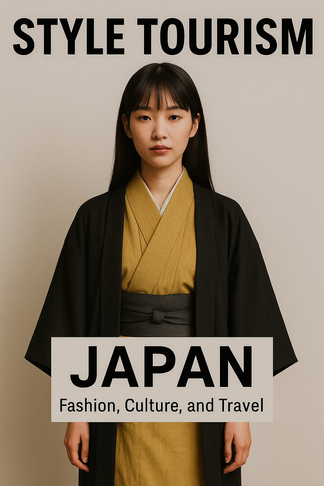

Japan Launches “Style Tourism” to Attract Fashion-Lovers Worldwide
Japan has just taken a bold step into the future of global tourism—one stitched together by threads of fashion, design, and visual culture. Announced this morning by the Japan Tourism Agency, the new “Style Tourism” initiative aims to attract travelers who see the world not only through landmarks, but through texture, aesthetics, and wearable identity.
With Tokyo, Kyoto, and Osaka as its central hubs, the program promises immersive journeys for those who crave more than snapshots—they want stories, styling, and the scent of fabric in motion. Visitors will be invited to explore Japan not as passive tourists, but as aesthetic participants in its evolving fashion narrative.
Fashion As Destination
“We’ve seen the rise of culinary tourism and adventure tourism. Now, Japan is leading the way in style tourism,” said Naoko Ishikawa, one of the lead directors of the project. “This is for the traveler who chooses a destination because of the way it looks, feels, and wears.”
Highlights of the initiative include:
- Curated style walks through Tokyo neighborhoods like Harajuku, Daikanyama, and Shimokitazawa
- Textile workshops with artisans in Kyoto’s Nishijin district
- Pop-up events and streetwear capsule drops co-hosted with Japanese designers
- Fashion-focused ryokan stays with wardrobe styling and kimono heritage education
More than sightseeing, the goal is to immerse travelers in Japan’s visual rhythm. Whether it's the calculated chaos of Shibuya street style or the quiet geometry of minimalist design, each location becomes a living gallery.
Collaborations That Matter
To bring the campaign to life, the Japan Tourism Agency is collaborating with major fashion entities, including BEAMS, Comme des Garçons, and emerging regional designers. The result? A cross-cultural exchange that doesn't feel like tourism—it feels like creative residency.
International visitors will be able to book “Style Routes” based on their interest: retro-futurism in Osaka, nature-inspired looks in rural Japan, or Tokyo's high-low aesthetic clashes. Think Airbnb meets Vogue Travel.
Why Now?
Post-pandemic, the travel industry has shifted. Tourists want more than passive experiences—they want personal relevance, authenticity, and beauty that speaks to them. According to a 2025 survey by Skyscanner, 1 in 4 Gen Z travelers says “fashion and design influence my travel choices more than history or food.”
Japan’s Style Tourism campaign is perfectly timed—and perfectly tailored to the new generation of aesthetic explorers.
“Style is not just what you wear. It’s how you move through space. Japan gets that.”
Global Implications
Industry experts say this move could spark a new genre of tourism across the world. Cities like Seoul, Paris, and Mexico City may soon follow suit with their own style-driven itineraries. But for now, Japan leads with elegance, precision, and courage.
The campaign launches globally this week, with early experiences available starting in July 2025.
Final Threads
This is not a marketing stunt. It’s a cultural statement. Japan is inviting the world not just to visit—but to observe, absorb, and express. For travelers craving fashion with depth, travel with meaning, and visuals that linger, this is your boarding call.
Words by Style Atlas